Off-campus college students struggle to eat a convenient, affordable, and varied lunch amid busy schedules. As Communications Lead for a five-person team in DSGN 308, I led two rounds of primary interviews, facilitated secondary research, and co-developed a Figma prototype of coci — a social cooking app that centralizes recipe inspiration, meal organization, and grocery list generation.
Problem Statement
Navigating Whitespace
Our team — Pigs in a Blanket — began by brainstorming individual frustrations in our own daily routines. One thread ran through all of us: eating in the middle of the day. We set out to determine if this issue was exclusive to the five of us.
Validating the Problem
We conducted 20 primary interviews with students, teachers, and working adults. From these interviews, we categorized common pain points by sentiment and recorded their frequency. Five prominent design opportunity spaces emerged:
- Minimizing cost
- Minimizing prep time
- Creating an ideal social environment
- Ensuring health and variety
- Balancing work and rest
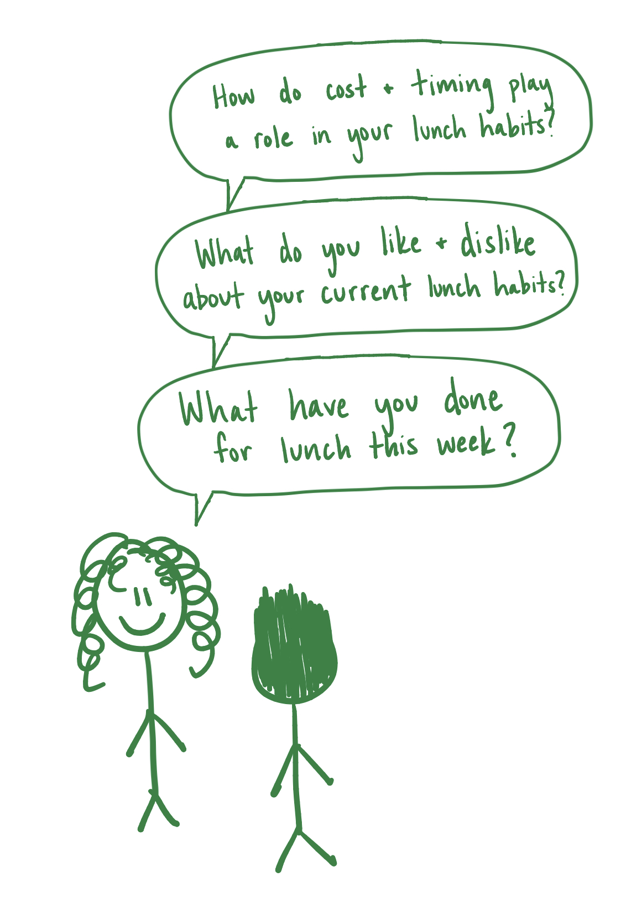
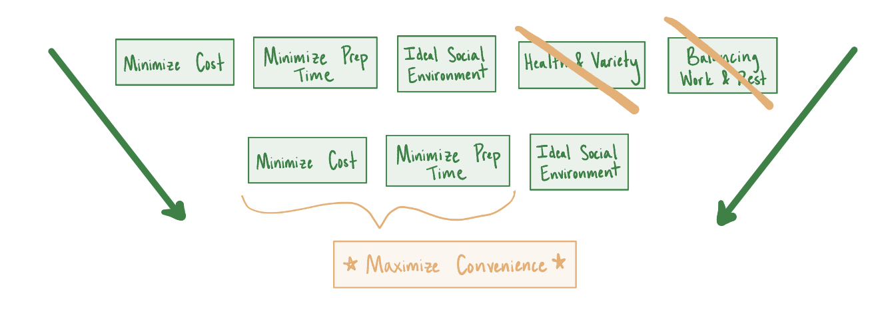
Power in Numbers
Secondary research on lunch habits confirmed what our interviews suggested on a broader scale: convenience is the single most important factor of lunch for consumers, and Gen Z is the generation most interested in improving their lunch experience. This data, combined with our interviews, directed us to a singular problem statement:
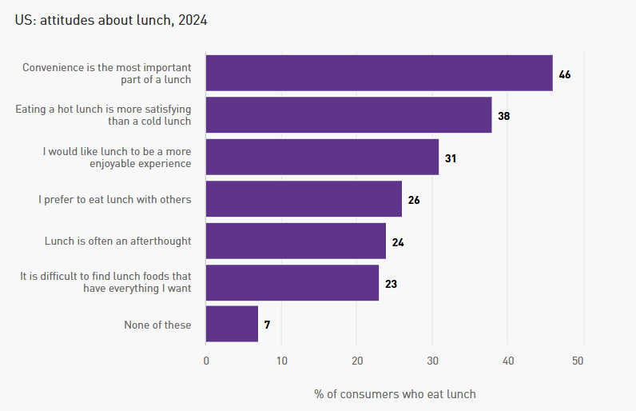
A cost-effective strategy or device to help off-campus college students aged 18–26 maximize the convenience of their lunch meal.
Methodology
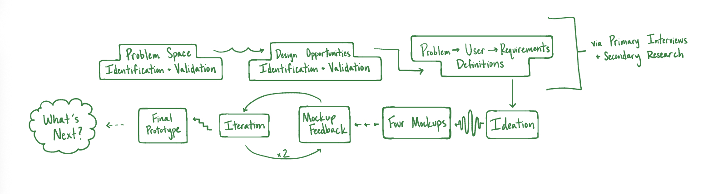
Primary Interviews
We first identified themes from 20 primary interviews of various user groups. After narrowing our focus to college students, we returned with refined questions targeting current solutions, desired areas of improvement, and their ideal lunch experience. For efficiency we utilized ChatGPT to report the most common solutions' functionalities and pitfalls. Additional secondary research into current solutions propelled us to our design requirements that addressed unmet needs.
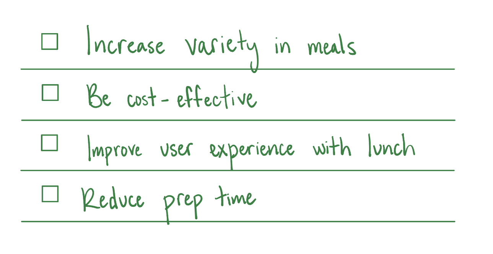
Ideation: Generating & Eliminating
A group ideation session resulted in concepts spanning three identified categories: storage solutions, meal prep apps, and shopping tools. To quantitavely evaluate our ideas, we eliminated any solution that failed to address at least two of our defined needs. The surviving ideas were formally rated in a numeric Design Alternatives Matrix.
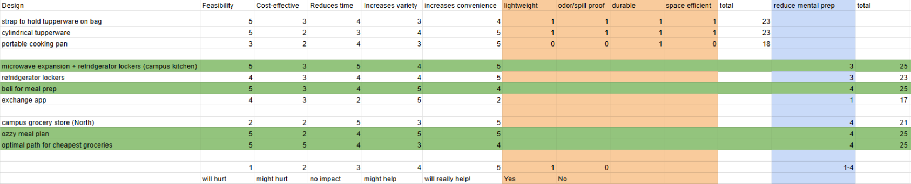
My favorite idea from ideation never made it to a mockup; the Design Alternatives Matrix eliminated it by forcing an honest, criteria-driven evaluation that my individual interest couldn't argue with. The process revealed that a great idea isn't always the right solution for a user's current needs.
Four Mockups, One Decision
The four highest scoring ideas were mocked up for additional user testing:
- Home-Cooking App
- NU Lunch Hub — refrigerated lockers on campus
- OZZI Meal Plan — dining hall leftovers packaged for takeaway
- Optimal Grocery Path App
Each was developed with key features, needs addressed, and specific feedback questions. We presented all four to 15 off-campus students and met with Stacey Brown, Director of NU Dining, to assess feasibility of the campus-based solutions.
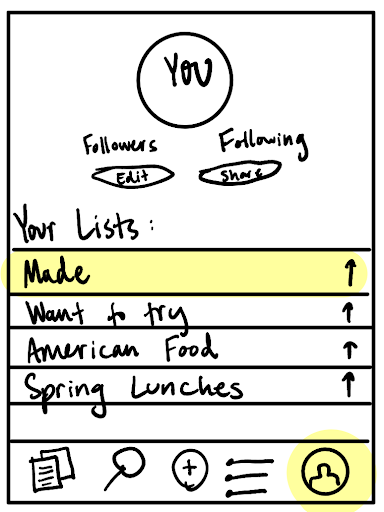
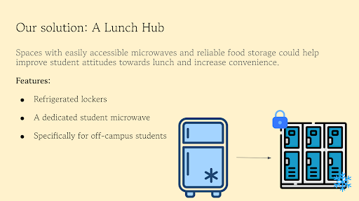
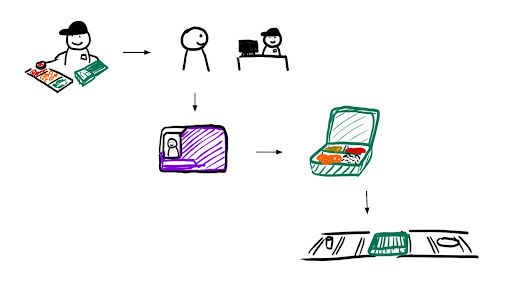

Following feedback, the OZZI solution was eliminated — it would have redirected dining hall leftovers away from Campus Kitchen, a student group that donates food to community shelters, and we were not comfortable with that tradeoff. The frequency analysis of in-person testing made the path forward clear:
| Solution | Would Use | Wouldn't Use |
| Home-Cooking App | 15 | 0 |
| NU Lunch Hub | 7 | 8 |
| Optimal Grocery Path App | 5 | 10 |
Number of students who would use each mockup if it were a real-world solution
Design Requirements
After more clearly defining "improve user experience with lunch," we revised our design requirements; our solution needed to:
- Increase variety in meals
- Increase convenience
- Reduce cost
- Reduce time spent preparing lunch
- Reduce mental effort
Solution
coci — Convenient Organized Cooking Inspiration
Named after the Spanish word cocinar (to cook), coci is a mobile app that provides accessible cooking inspiration, organized recipe storage, and time-sensitive grocery list generation. It is built around five features designed to reduce the mental and logistical burden of cooking at home. We incorporated the optimal grocery path functionality from our other mockup as it was highly desirable to users, but not enough to warrant a whole app.
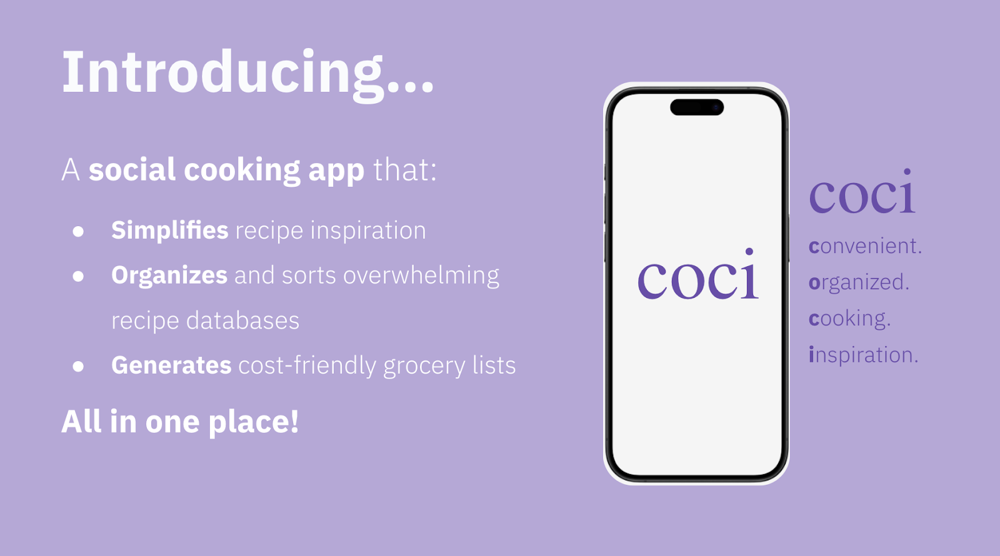
coci's Five Features
The Five Features
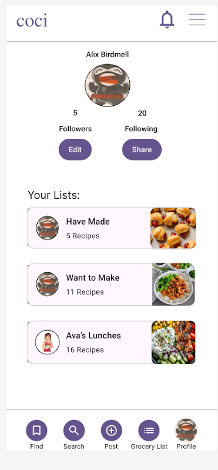
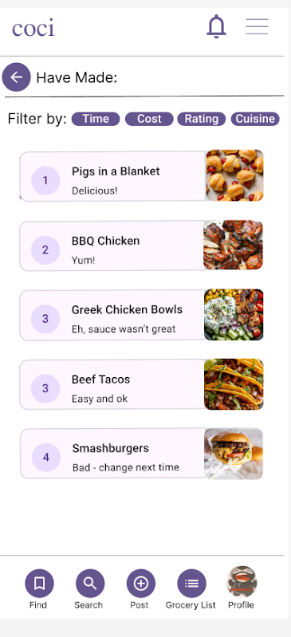
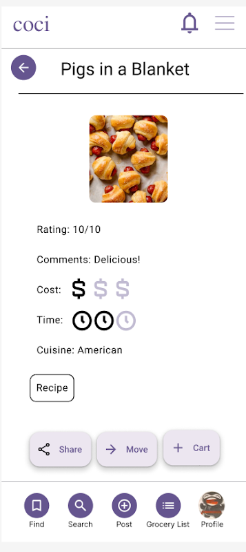
Users organize saved recipes into lists, sortable by time, cost, rating, or cuisine.
Profile
Needs Addressed
- Increases convenience
- Reduces decision fatigue
- Reduces prep time
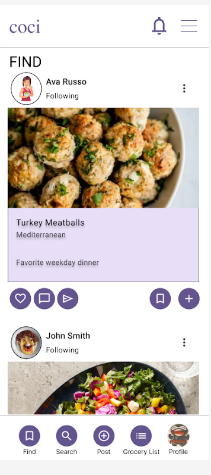
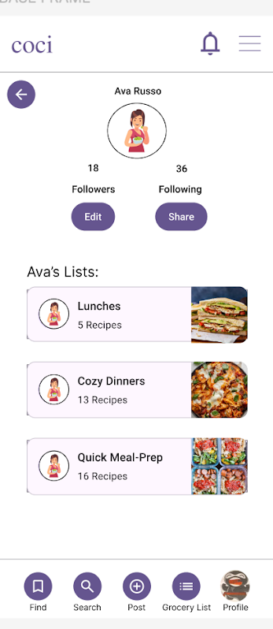
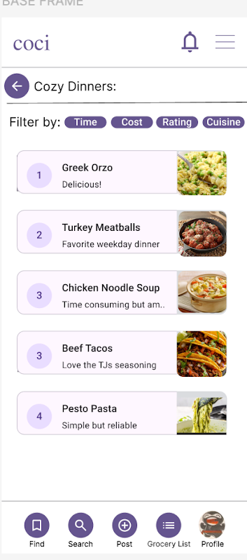
A feed of recipes posted by people the user follows, with the ability to save, comment, and add ingredients to their grocery list.
Find
Needs Addressed
- Increases variety in meals
- Reduces mental effort
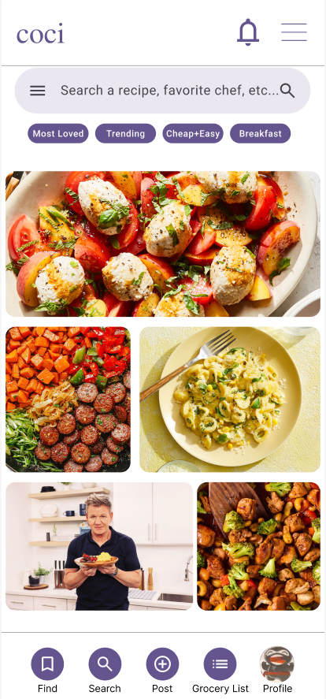
Browse trending and recommended recipes and search for specific dishes or creators.
Search / Explore
Needs Addressed
- Increases variety in meals
- Increases convenience
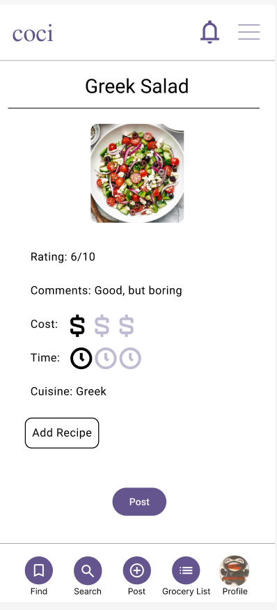
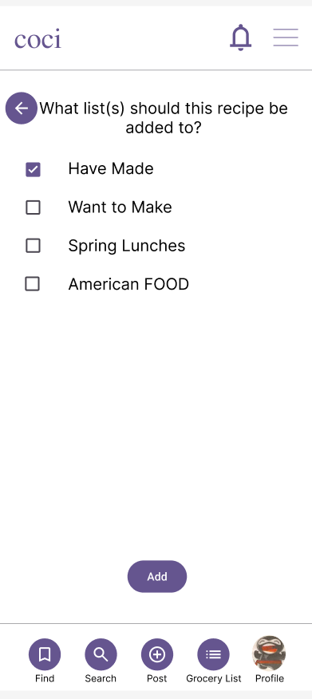
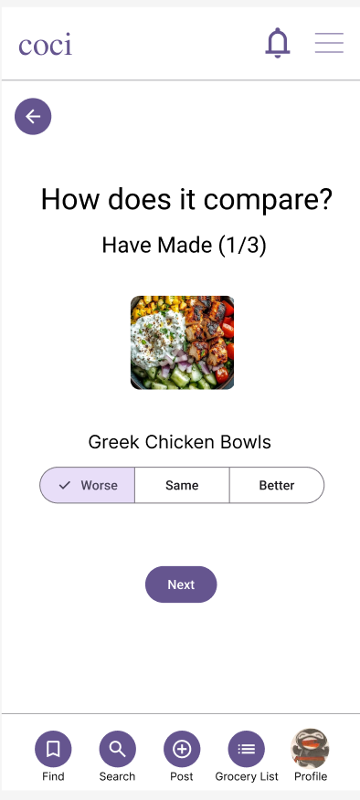
Upload recipes (manually or via URL import) and rank them against previous recipes using a 1v1 comparison system inspired by beli.
Post
Needs Addressed
- Increases convenience
- Reduces mental effort
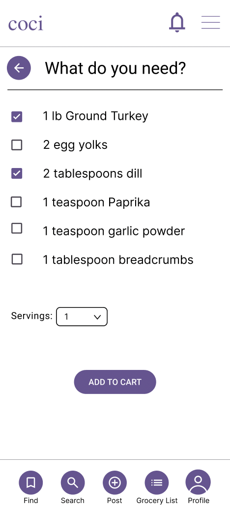
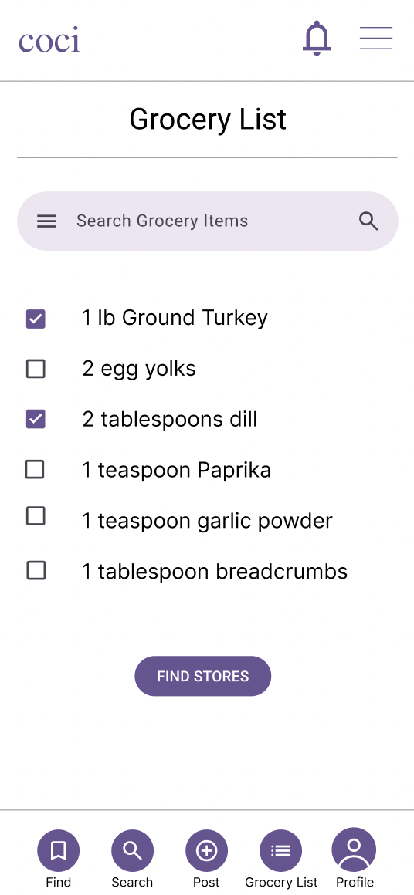
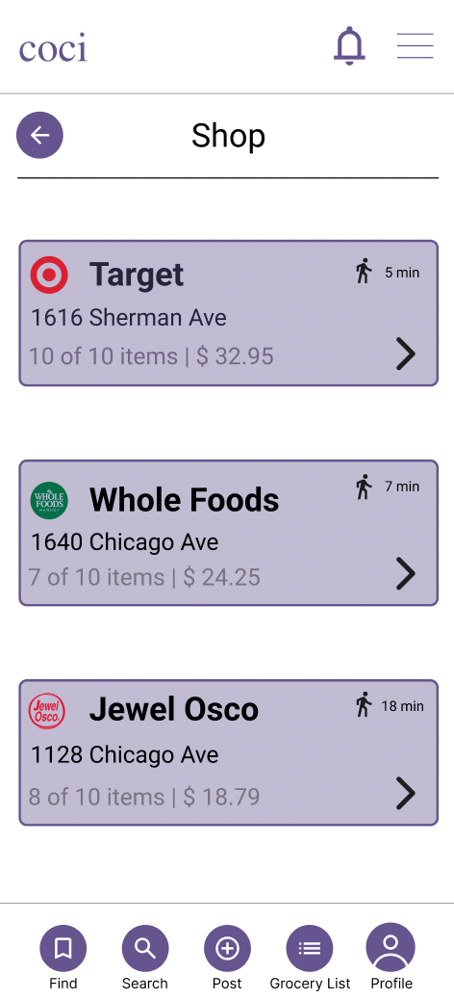
Add ingredients from any recipe directly to a grocery list, adjust servings, select what you need, and see which nearby stores are cheapest and fastest.
Grocery List
Needs Addressed
- Reduces cost
- Reduces time spent preparing lunch
- Reduces mental effort
What's Next
Pigs in a Blanket delivered a final Figma prototype and is not continuing development of coci. However, we outlined a clear path for a future team:
Immediate Next Steps
- Develop coci as a minimum viable product
- Launch a pilot test with Northwestern students
- Track performance against quantitative benchmarks
Features We Left Out (On Purpose)
Several desired features were intentionally excluded because they did not directly satisfy our defined needs: a weekly meal planner, fitness app compatibility, and private posting. These are clear candidates for a future iteration once the core app has proven its value.
For Me
This Whitespace Project provided necessary experience in identifying the needs that serve a population. Each individual had nuanced opinions on their lunch experience, but our goal as designers was to create a representative solution that best served the needs of our target demographic, not just one individual. Finding a unique opportunity space proved to be difficult, but deliberately crafting and clearly defining our problem statement, user persona, and design requirements allowed us to focus our design and its features on what mattered most for our target demographic's needs.
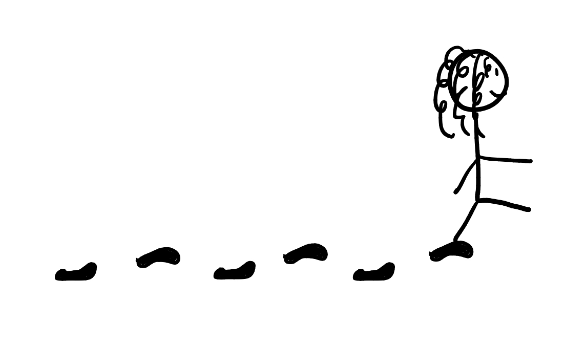